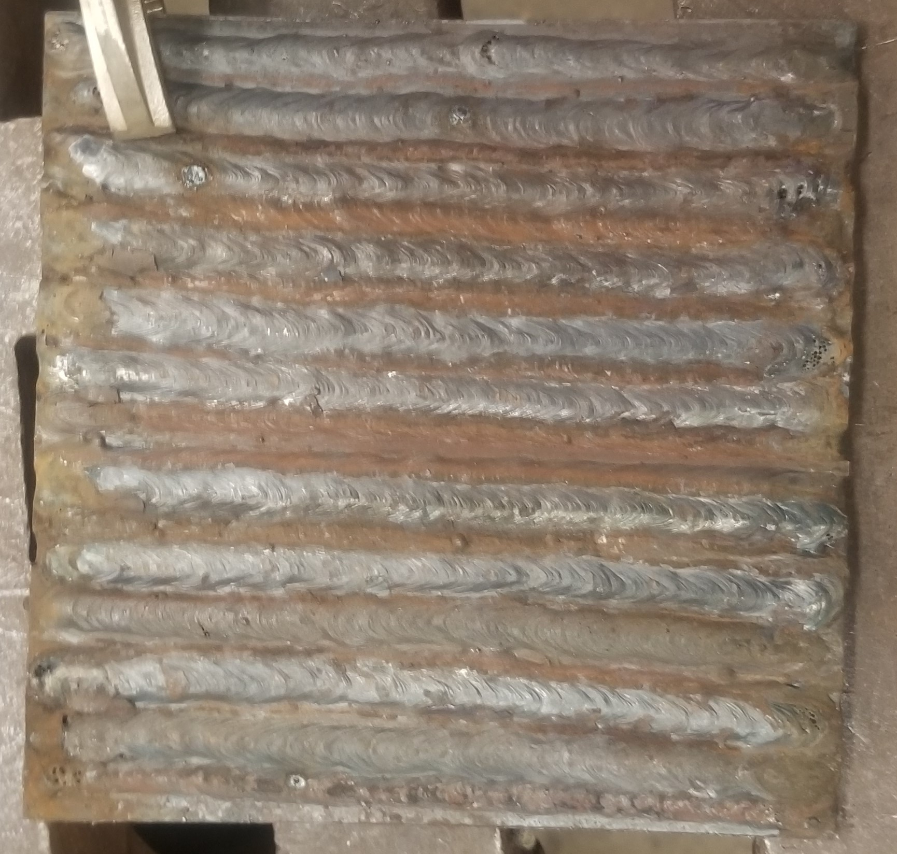
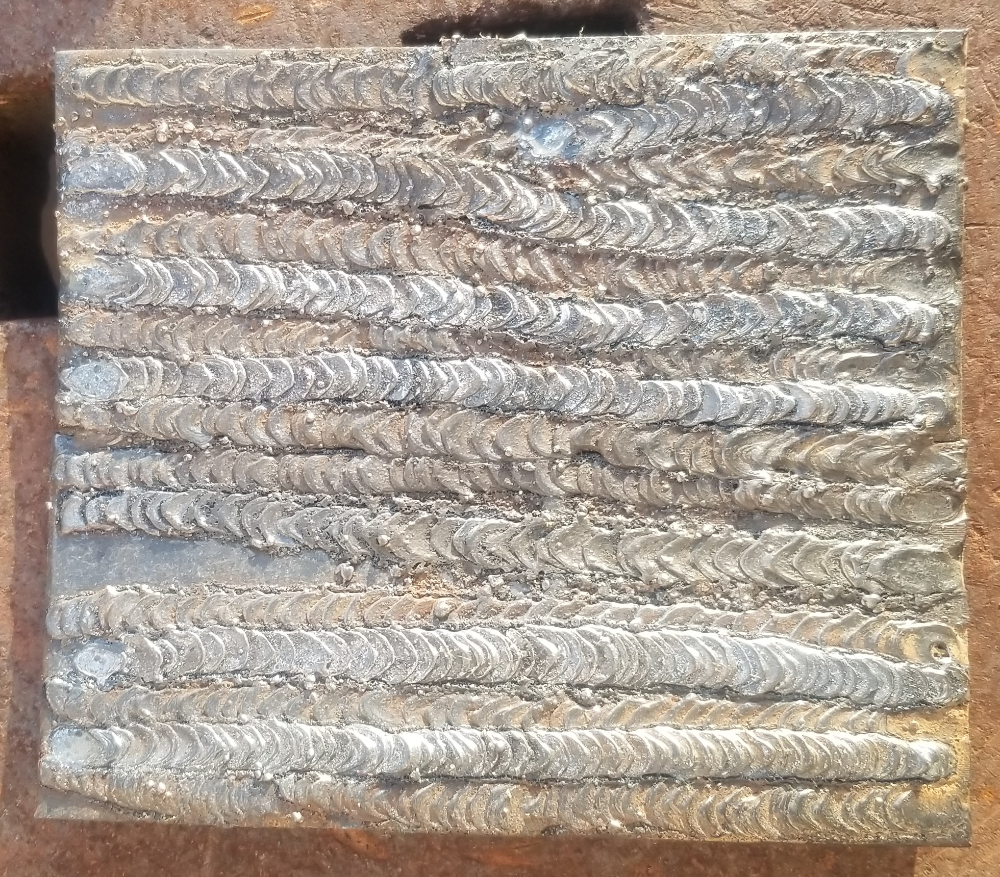
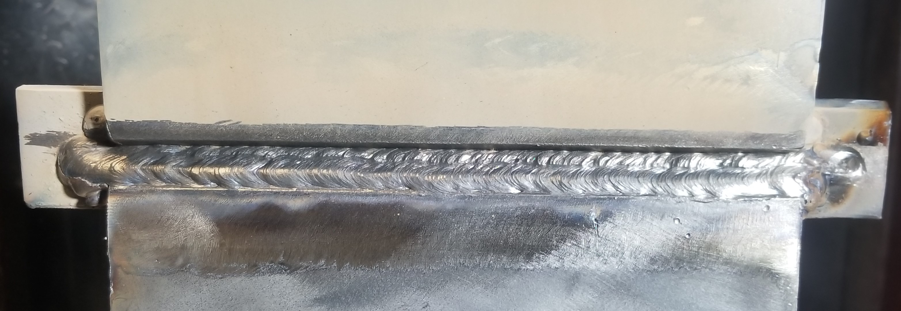
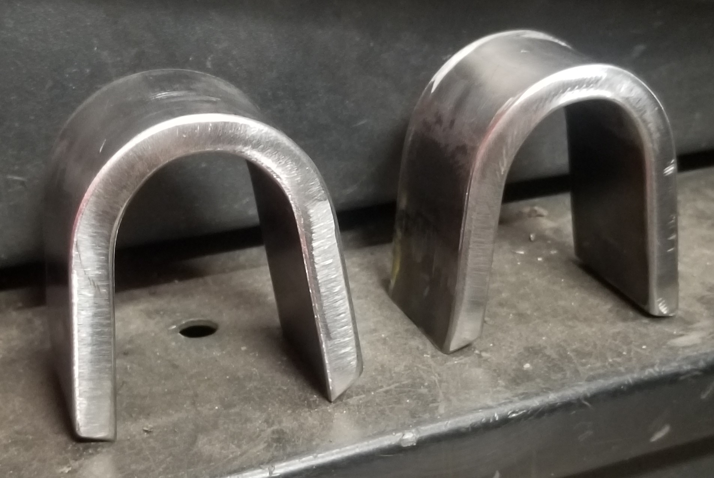
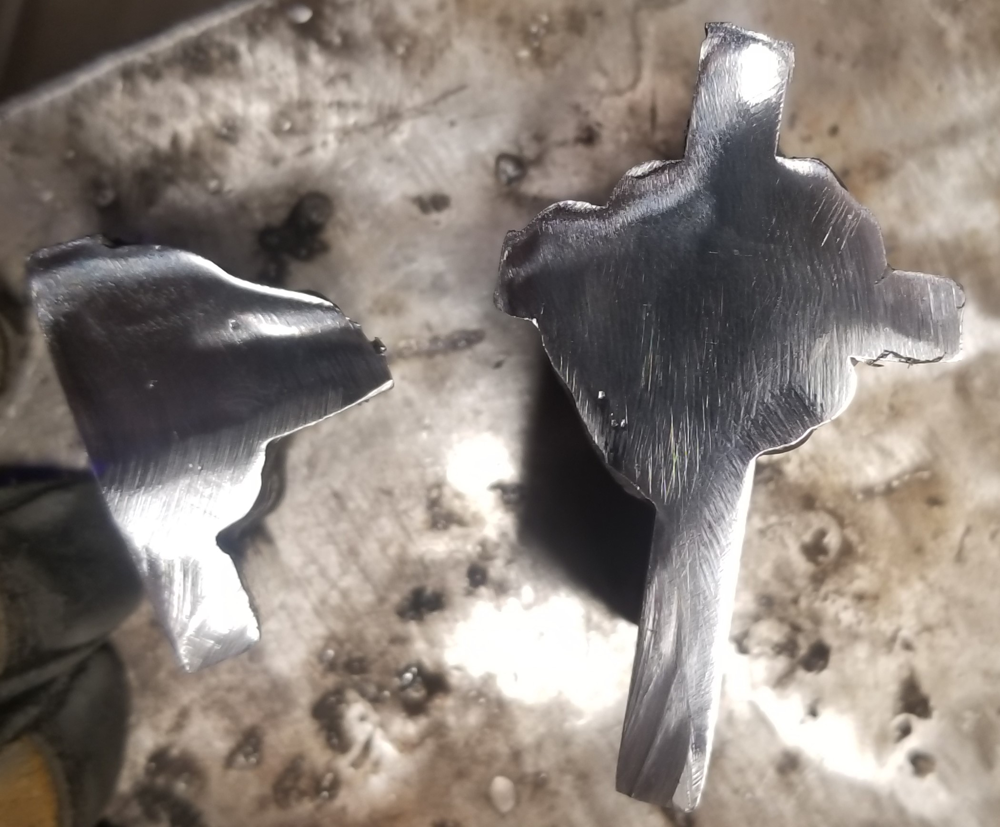
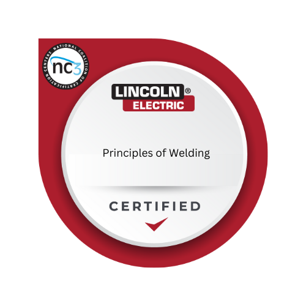

Building skills with metal and fire. Across the SMAW sequence, TIG, and metal fabrication I went from striking my first arc to all-position welds — earning NC3 certifications along the way.
Three sequential classes took me from flat-position stringer beads through horizontal, vertical, and overhead groove and fillet welds. I learned to choose electrodes and settings, control arc length and heat, identify and correct defects, and prepare test coupons for certification.




Learned to read blueprints, lay out and cut material, and assemble parts with shop tools. In TIG I worked on torch control, adding filler rod, and maintaining clean, precise welds on mild steel and aluminum.

Certified at each level of the SMAW sequence through the NC3 program.
